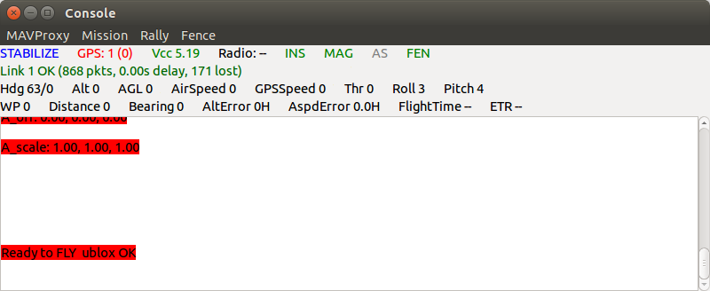
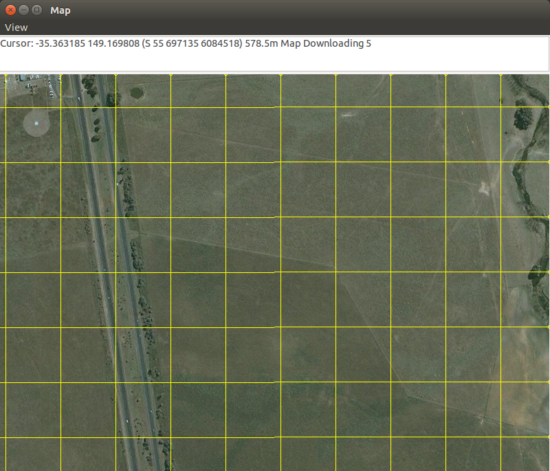

Modules
MAVProxy can be extended with modules. These run in parallel threads to the main MAVProxy program in order to maintain overall stability.
Modules can include such things as GUI elements and diagnostic and monitoring applications.
Module Management
Modules need to be loaded before they can be used. The following command can be used:
module load modulename
Other management commands for unloading, reloading and listing currently loaded modules include:
module unload modulename
module reload modulename
module list
Default Modules
MAVProxy comes with several modules by default. The following list only describes modules that do not have their own dedicated page in the documentation.
console
A GUI console that displays important information to the UAV's current state. The area below the menu bar shows on the upper row (left to right): Flight mode and arming state, GPS status, system voltage, telemetry radio link quality, inertial system availability, magnetometer availability, airspeed sensor availability, Sonar/Lidar availability, Attitude control system(AHRS and EKF) state, geofence status and terrain dataset availibility. The second row shows further details of the telemetry link quality. The third and fourth rows show selected sensor readings.
The menu bar allows the user to change any of the global MAVProxy settings, as well as shortcuts to command waypoint, rally point and geofence commands.
{kind=link}
map
A moving map display that shows the UAV's current position, waypoints and geofence.
Maps are automatically downloaded and cached to the user's hard drive. The module will use these files if an internet connection is not found.
To display the waypoints and geofence, the wp list and fence list commands can be used.
Waypoint editing is allowing by right-clicking to select waypoint and then right clicking to move it to that point.
To draw a set of waypoints, use the wp draw command. Right click on the map for the desired waypoints. When finished, use the wp loop to connect the last waypoint to the first one, creating a loop.
Use the "g" key to specify a position to move the map to.
{kind=link}
graph
A module to plot (graph) data in realtime from the UAV. It is useful for looking for time-varying patterns in the data
After loading, new plots can be created by:
graph add dataname
Multiple items can be added at once. Use the :2 to specify using the right vertical axis.
graph add VFR_HUD.alt VFR_HUD.airspeed:2
Arbitrary mathematical functions can also be used.
graph add "(VFR_HUD.alt/1000.0)+5"
antenna
By specifying the ground station location, this module will output (via text and speech) the relevant azimuth and elevation angles to point at the UAV throughout it's flight. This is useful for a manually pointed antenna.
module load antenna [lat] [long]
auxopt
Allows the user to change the action mapped to RC channels 7 and 8 on APM:Copter.
Use auxopt list and auxopt show to show a list of available actions for the RC channels and their current setting respectively.
Use auxopt set [ch] [action] and auxopt reset to set and reset the action mapped to the RC channels respectively.
cameraview
Adds a layer to the map showing the area in view of a belly-mounted camera, accounting for the current roll and pitch of the UAV. It also provides the data for geotagging captured images.
This module requires the cuav library (available via pypi) for integration with the camera hardware.
DGPS
Provides a method to supply DGPS data up to the UAV. The ground station segment of the DGPS system is required to be networked with the ground station running MAVProxy. It is assumed that the DGPS data comes in on the address 127.0.0.1:13320.
HIL
Provides a Hardware-In-the-Loop interface to an APM running HIL code. It is to be used in conjunction with the Tools/autotest/jsbsim/runsim.py file in the APM source code, which provides a flight dynamics simulator (JSBSim).
It is used for testing modifictions to the APM code in a simulated environment.
log
Allows the user to manage the logs on an APM. Use log list to view a list of the logs on the APM and log erase to delete all logs on the APM.
Use log download [lognumber] [filename] to start to download a specific log to the specified file name. log status to see the transfer status and log cancel to cancel the download.
relay
Control the operation of the output servos. Note this should only be used for the non-flight-control servos. An example of usage would be camera shutter controls. Use servo set [SERVO_NUM] [PWM] to set an output servo to a particular PWM value. Use servo repeat [SERVO_NUM] [PWM] [COUNT] [PERIOD] to make the servo repeat between it's current and specified PWM values.
If relay controls are available, the relay set [RELAY_NUM] [0|1] to set a particular relay to 0 or 1. Similar to the servos, use relay repeat [RELAY_NUM] [COUNT] [PERIOD] to setup a repeating relay.
sensors
Provides regular reporting to the console of the UAV's current speed, altitude and heading. It also reports any variances or disagreement between the sensors.
serial
Allows transmission of data packets through the serial ports on the APM via MAVProxy (ie. remote control of the serial ports). Use serial lock and serial unlock to give (or release) exclusive control of the serial ports.
To change to serial port settings use serial set [setting] [value], where setting can be port, baudrate or timeout. To send data, enter serial send [data]. Note that data from these serial ports cannot currently be received.
speech
Activates the text-to-speech function. It will "say" any important annoucements throughout the flight.
tracker
This is an improved antenna tracker, where the APM is mounted on an antenna tracker (with a GPS module) which in turn is connected to the ground station. Using the positions of the APM on the UAV and the APM on the antenna, this module will send commands to the antenna APM to alter it's azimuth/elevation (via servos on the APM) to maintain tracking with the UAV.
Use tracker arm and tracker disarm to arm and disarm the servos on the tracker respectively.
tracker level will perform the level calibration routine and tracker calpress will calibrate the barometer, so that air pressure corrections can be sent back to the UAV (for a more accurate altitude estimation).
tracker start will start the tracking.
There are several parameters for the tracker, to specify the serial port that the antenna tracker APM is on. Use tracker param [set|show|fetch|help] to manage the parameters. There are three parameters - port, baud and debug.
tuneopt
This module manages the action mapped to channel 6. It is used for multicopters only. Use tuneopt [set|show|reset|list] to manage the mapped action. For the set command, use the format tuneopt set [OPTION] [LOW] [HIGH] to map a tuning action and it's range of values.
misseditor
This module is a GUI waypoint editor. It is useful for reading, loading and editing waypoints.